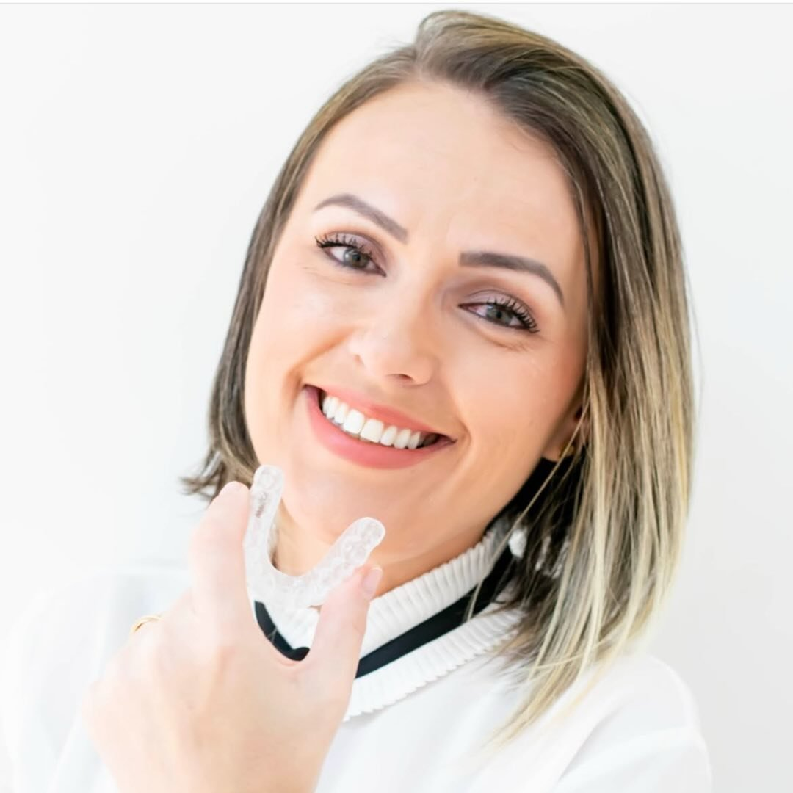

Antes do alinhador, eu examino sua mordida.
Sou a Dra. Samanta Protte, ortodontista no Tatuapé. Planejo e acompanho cada caso: alinhador, aparelho fixo ou preparo para cirurgia ortognática.

Na avaliação, eu olho dente por dente.
A mordida, a gengiva e a articulação também entram no exame. Só depois eu indico o tratamento, e às vezes ele não é o alinhador.
O que eu trato
Todo tratamento começa pela mesma avaliação no consultório.
| Tratamento | Como é | Quando eu indico |
|---|---|---|
| Alinhadores invisíveis Ver as etapas | Placas transparentes que você tira para comer e escovar os dentes. Quase ninguém percebe que você está em tratamento. | Dentes tortos, espaçados ou apinhados, quando a mordida permite. |
| Aparelho fixo | Metálico ou estético, colado nos dentes e ajustado nas consultas. | Quando o caso pede mais controle sobre cada dente. |
| Preparo para cirurgia ortognática | Alinho os dentes antes da cirurgia e finalizo o encaixe depois, junto com o cirurgião bucomaxilofacial. | Quando a mordida depende de um ajuste na posição dos ossos da face. |
| Contenção e acompanhamento | A contenção mantém os dentes no lugar, e as consultas de revisão confirmam que eles continuam lá. | No fim de qualquer tratamento ortodôntico. |
Como funciona o tratamento com alinhador
Sou referência em alinhadores SouSmile. Você troca as placas em casa e volta ao consultório para eu acompanhar cada movimento.
-
Avaliação
Conversamos sobre o que incomoda no seu sorriso. Eu examino a mordida, a gengiva e a articulação e digo se o alinhador é indicado para o seu caso.
-
Escaneamento e planejamento
Um escaneamento digital substitui a moldagem com massa. Com ele eu planejo cada movimento e mostro a simulação do resultado antes de começar.
-
Uso das placas
Você usa os alinhadores cerca de 22 horas por dia e troca de placa conforme o planejamento. Nas revisões eu confiro se os dentes estão indo para onde devem.
-
Contenção
Com os dentes na posição final, a contenção mantém o resultado. Continuamos com consultas de acompanhamento.

Quem cuida do seu tratamento
Sou especialista em Ortodontia e atendo no Tatuapé, na Zona Leste de São Paulo. Eu mesma planejo cada caso e atendo você em todas as consultas, do primeiro escaneamento à contenção.
Explico o que vamos fazer e por quê. Se o alinhador não for o melhor caminho para a sua mordida, eu digo e indico o aparelho fixo.

Perguntas que eu mais ouço
Se a sua não estiver aqui, me mande uma mensagem pelo Instagram.
Alinhador invisível serve para qualquer caso?
Serve para boa parte dos casos de dentes tortos, espaçados ou apinhados, mas não para todos. Na avaliação eu examino a mordida e digo se ele é a melhor opção para você ou se o aparelho fixo resolve melhor.
Como funciona a pré-avaliação virtual?
É um primeiro passo online para saber se o alinhador SouSmile combina com o seu caso. Você agenda pela página da SouSmile, e a avaliação clínica completa acontece depois, aqui no consultório.
Quanto tempo dura o tratamento?
Depende da complexidade do caso. Casos simples levam alguns meses; os mais complexos, mais tempo. No planejamento digital você já sai com uma estimativa para o seu caso.
O alinhador dói?
É comum sentir uma pressão leve nos primeiros dias de cada placa nova. É sinal de que os dentes estão se movendo, e o desconforto passa em pouco tempo.
Posso comer normalmente?
Pode. Você tira o alinhador para comer e para beber qualquer coisa que não seja água, escova os dentes e coloca de volta.
O que é o preparo para cirurgia ortognática?
Quando a mordida depende de um ajuste na posição dos ossos da face, o tratamento ortodôntico prepara os dentes antes da cirurgia e finaliza o encaixe depois. Eu conduzo essa parte junto com o cirurgião bucomaxilofacial.
Marque sua avaliação
O agendamento é feito pelo link da clínica. Se ainda não quiser marcar, comece pela pré-avaliação virtual da SouSmile.
- Tatuapé, São Paulo - SP
- @protteodonto
- linktr.ee/protteodonto
Próxima consulta
- Paciente
- Você
- Profissional
- Dra. Samanta Protte
- Local
- Protte Odonto, Tatuapé
- Data e horário
- a combinar